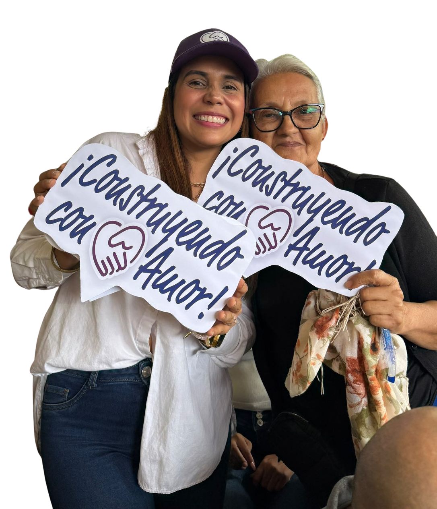

Estrategia Política de Campaña
CONSTRUYENDO CON AMOR POR ORTEGA
Campaña Electoral · Liderazgo y Transformación Social
Propuesta estratégica y diagnóstico integral para consolidar la primera alcaldía liderada por una mujer en la historia de Ortega, Tolima. Una visión con carácter, cercanía y amor por el territorio.

Candidata a la Alcaldía